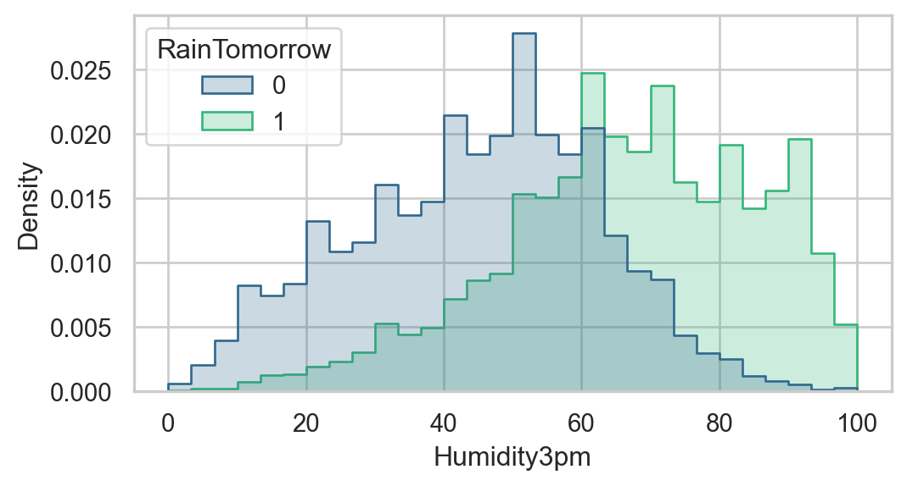
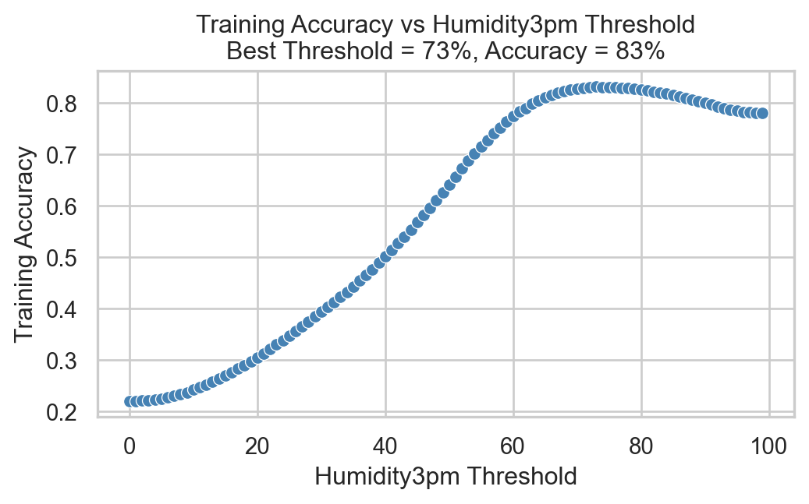

import pandas as pd
import seaborn as sns
from matplotlib import pyplot as plt
sns.set_theme(style="whitegrid", context="notebook")
sns.set_palette("viridis", n_colors=2)8 Introducing Classification
Open the live notebook in Google Colab or download the live notebook
.So far in these notes, we’ve focused on regression: the problem of predicting a numerical outcome from a set of features. We framed the regression problem as one of learning a function \(f\) such that
\[ \begin{aligned} y \approx \hat{h} = f(x)\;, \end{aligned} \]
where here \(x\) might be shorthand for a vector of multiple features. We studied linear regression and several extensions in order to attempt to learn \(f\) from data, and measured the quality of our predictions using metrics like the mean-squared error (MSE):
\[ \begin{aligned} MSE = \frac{1}{n}\sum_{i = 1}^n (y - \hat{y})^2\;. \end{aligned} \]
In this set of notes, we’ll turn our attention to classification. In a classification problem, the outcome \(y\) is categorical rather than numerical. We’ll especially focus on the problem of binary classification, where \(y\) takes on only two possible values, which we can label as 0 and 1. Binary classification problems arise in many contexts:
- Predicting whether a patient has a disease (1) or not (0) based on medical test results.
- Predicting whether an email is spam (1) or not spam (0) based on its content.
- Predicting whether it will rain tomorrow (1) or not (0) based on weather data.
We’ll focus on this latter task in our examples, using weather data collected from the Australian Bureau of Meteorology. The dataset contains daily weather observations from various locations across Australia, along with a binary indicator of whether it rained the next day. Our goal will be to build a model that can predict whether it will rain tomorrow based on today’s weather conditions.
url = "../data/australia-weather/weatherAUS.csv"
df = pd.read_csv(url)
df.head()| Date | Location | MinTemp | MaxTemp | Rainfall | Evaporation | Sunshine | WindGustDir | WindGustSpeed | WindDir9am | ... | Humidity9am | Humidity3pm | Pressure9am | Pressure3pm | Cloud9am | Cloud3pm | Temp9am | Temp3pm | RainToday | RainTomorrow | |
|---|---|---|---|---|---|---|---|---|---|---|---|---|---|---|---|---|---|---|---|---|---|
| 0 | 2008-12-01 | Albury | 13.4 | 22.9 | 0.6 | NaN | NaN | W | 44.0 | W | ... | 71.0 | 22.0 | 1007.7 | 1007.1 | 8.0 | NaN | 16.9 | 21.8 | No | No |
| 1 | 2008-12-02 | Albury | 7.4 | 25.1 | 0.0 | NaN | NaN | WNW | 44.0 | NNW | ... | 44.0 | 25.0 | 1010.6 | 1007.8 | NaN | NaN | 17.2 | 24.3 | No | No |
| 2 | 2008-12-03 | Albury | 12.9 | 25.7 | 0.0 | NaN | NaN | WSW | 46.0 | W | ... | 38.0 | 30.0 | 1007.6 | 1008.7 | NaN | 2.0 | 21.0 | 23.2 | No | No |
| 3 | 2008-12-04 | Albury | 9.2 | 28.0 | 0.0 | NaN | NaN | NE | 24.0 | SE | ... | 45.0 | 16.0 | 1017.6 | 1012.8 | NaN | NaN | 18.1 | 26.5 | No | No |
| 4 | 2008-12-05 | Albury | 17.5 | 32.3 | 1.0 | NaN | NaN | W | 41.0 | ENE | ... | 82.0 | 33.0 | 1010.8 | 1006.0 | 7.0 | 8.0 | 17.8 | 29.7 | No | No |
5 rows × 23 columns
In this data set, each row corresponds to a single day’s weather observations at a particular location. There are associated measurements at the station including:
- Minimum and maximum temperature
- Daily rainfall
- Measurements describing the evaporation, sunshine, wind speed, humidity, and pressure.
- An indicator of whether it rained today (
RainToday) - An indicator of whether it rained the following day (
RainTomorrow).
Our aim is to predict the value of RainTomorrow based on the other features in the data set. To do this, we have a bit of data cleaning to do. First, we are going to drop rows with missing data, as well as the Location and Date columns. These columns can be very helpful in prediction tasks, but methods that use spatial and temporal data structure like these are more advanced than we’ll cover in these notes. To see how these variables might be used, knowing that it rained yesterday in Montreal might make it more likely that rain will come today in Vermont.
df = df.dropna()
df = df.drop(columns=["Location", "Date"])The RainToday and RainTomorrow columns are currently represented as strings (“Yes” and “No”). We’ll convert these to binary numerical values (1 and 0), which makes them easier to use in modeling.
df["RainToday"] = df["RainToday"].map({"No": 0, "Yes": 1})
df["RainTomorrow"] = df["RainTomorrow"].map({"No": 0, "Yes": 1})A First Classifier: Humidity
To check that these meteorological conditions are predictive of rain tomorrow, we can visualize the distribution of one of the features, Humidity3pm, stratified by whether it rained the next day or not.
fig, ax = plt.subplots(figsize = (6,3))
sns.histplot(data=df, hue="RainTomorrow", x = "Humidity3pm", bins=30, element="step", stat="density", common_norm=False, ax = ax)
So, days with higher afternoon humidity appear more likely to be followed by rain the next day.
Maybe we should try simply making a prediction based on humidity alone?
Train-Test Split
Since we’ll be aiming to assess the predictive performance of the humidity classifier and several other candidates today, let’s split our data into training and test sets.
from sklearn.model_selection import train_test_split
y = df["RainTomorrow"]
X = df.drop(columns=["RainTomorrow"])
X = pd.get_dummies(X, drop_first=True)
X_train, X_test, y_train, y_test = train_test_split(X, y, random_state=2026)First Classifier: Humidity Thresholding
Now let’s figure out our classification rule using humidity. Our rule will be:
Predict rain tomorrow if the humidity at 3pm today is above some threshold \(t\).
Interestingly, this can be cast in a similar format to the one we used for regression:
\[ \begin{align} \hat{y} = f(x) = \begin{cases} 1 & \text{if } \text{Humidity3pm} > t \\ 0 & \text{otherwise} \end{cases} \end{align} \]
Making this classifier work requires choosing a threshold \(t\). One way to do this is to try out a range of possible thresholds, and see which one gives the best accuracy on the training data.
best_acc = 0
best_threshold = 0
fig, ax = plt.subplots(figsize = (6,3))
for t in range(100):
acc = ((df["Humidity3pm"] > t) == df["RainTomorrow"]).mean()
sns.scatterplot(x=[t], y=[acc], color="steelblue", ax = ax)
if acc > best_acc:
best_acc = acc
best_threshold = t
plt.xlabel("Humidity3pm Threshold")
plt.ylabel("Training Accuracy")
plt.title(f"Training Accuracy vs Humidity3pm Threshold\nBest Threshold = {best_threshold}%, Accuracy = {100*best_acc:.0f}%")Text(0.5, 1.0, 'Training Accuracy vs Humidity3pm Threshold\nBest Threshold = 73%, Accuracy = 83%')
So, it’s possible to choose a threshold that gives around 83% accuracy on the training data! How well does this classifier do on the test data?
y_pred = (X_test["Humidity3pm"] > best_threshold).astype(int)
(y_test == y_pred).mean()np.float64(0.8342431761786601)We achieve similar performance on the test data!
Base Rate
But wait! Could we have done equally as well simply by predicting the most common outcome in the data set? For example, how accurate would we be if we simply predicted “No Rain Tomorrow” for every day? We can calculate this as a one-liner:
(y_test == 0).mean()np.float64(0.777667493796526)So, on the test set, we would have been about 78% accurate by always predicting “No Rain Tomorrow”. We often call this the base rate of prediction, and a basic test for any model is whether it can exceed the base rate. Our humidity-based classifier clears this bar: it is slightly better than the base rate.
Logistic Regression
Although our humidity-based classifier is already better than the base rate, we might reasonably hope to do even better than that by making use of all more features in the data set. Here, we’ll focus on logistic regression for binary classification. Logistic regression is a linear model similar to linear regression. In logistic regression, we form a score \(s\) as a weighted sum of features:
\[ \begin{aligned} s_i = \sum_{i=1}^p w_i x_i\;, \end{aligned} \]
where \(x_i\) is the \(i\)th feature associated with a given observation. Like we did with humidity above, we then compare \(s_i\) to a threshold \(t\) to make a prediction:
\[ \begin{aligned} \hat{y} = f(x) = \begin{cases} 1 & \text{if } s > t \\ 0 & \text{otherwise.} \end{cases} \end{aligned} \]
The trick here, of course, is that we need to learn the coefficients \(w_i\) from data. The details of how this happens are beyond the scope of these notes, but rely on an optimization procedure related to the one we used for linear regression. sklearn implements logistic regression via the LogisticRegression class, which we’ll use here.
First, we need to one-hot encode any categorical variables in our feature set, since logistic regression requires numerical inputs. Then, we can fit the model to the training data.
X_train = pd.get_dummies(X_train, drop_first=True)
X_test = pd.get_dummies(X_test, drop_first=True)Now we’re ready to fit the logistic regression model.
from sklearn.linear_model import LogisticRegression
model = LogisticRegression()
f = model.fit(X_train, y_train)/Users/mlinderman/miniconda3/envs/cs1010-notes/lib/python3.10/site-packages/sklearn/linear_model/_linear_loss.py:200: RuntimeWarning: divide by zero encountered in matmul
raw_prediction = X @ weights + intercept
/Users/mlinderman/miniconda3/envs/cs1010-notes/lib/python3.10/site-packages/sklearn/linear_model/_linear_loss.py:200: RuntimeWarning: overflow encountered in matmul
raw_prediction = X @ weights + intercept
/Users/mlinderman/miniconda3/envs/cs1010-notes/lib/python3.10/site-packages/sklearn/linear_model/_linear_loss.py:200: RuntimeWarning: invalid value encountered in matmul
raw_prediction = X @ weights + intercept
/Users/mlinderman/miniconda3/envs/cs1010-notes/lib/python3.10/site-packages/sklearn/linear_model/_linear_loss.py:330: RuntimeWarning: divide by zero encountered in matmul
grad[:n_features] = X.T @ grad_pointwise + l2_reg_strength * weights
/Users/mlinderman/miniconda3/envs/cs1010-notes/lib/python3.10/site-packages/sklearn/linear_model/_linear_loss.py:330: RuntimeWarning: overflow encountered in matmul
grad[:n_features] = X.T @ grad_pointwise + l2_reg_strength * weights
/Users/mlinderman/miniconda3/envs/cs1010-notes/lib/python3.10/site-packages/sklearn/linear_model/_linear_loss.py:330: RuntimeWarning: invalid value encountered in matmul
grad[:n_features] = X.T @ grad_pointwise + l2_reg_strength * weights
/Users/mlinderman/miniconda3/envs/cs1010-notes/lib/python3.10/site-packages/sklearn/linear_model/_logistic.py:473: ConvergenceWarning: lbfgs failed to converge after 100 iteration(s) (status=1):
STOP: TOTAL NO. OF ITERATIONS REACHED LIMIT
Increase the number of iterations to improve the convergence (max_iter=100).
You might also want to scale the data as shown in:
https://scikit-learn.org/stable/modules/preprocessing.html
Please also refer to the documentation for alternative solver options:
https://scikit-learn.org/stable/modules/linear_model.html#logistic-regression
n_iter_i = _check_optimize_result(Let’s go ahead and evaluate this model on the test data.
y_pred = model.predict(X_test)
(y_test == y_pred).mean()/Users/mlinderman/miniconda3/envs/cs1010-notes/lib/python3.10/site-packages/sklearn/utils/extmath.py:203: RuntimeWarning: divide by zero encountered in matmul
ret = a @ b
/Users/mlinderman/miniconda3/envs/cs1010-notes/lib/python3.10/site-packages/sklearn/utils/extmath.py:203: RuntimeWarning: overflow encountered in matmul
ret = a @ b
/Users/mlinderman/miniconda3/envs/cs1010-notes/lib/python3.10/site-packages/sklearn/utils/extmath.py:203: RuntimeWarning: invalid value encountered in matmul
ret = a @ bnp.float64(0.8557249202410493)Our logistic regression model is slightly better than our humidity-based classifier!
Inspecting Coefficients
We can check the weights in the logistic regression model to see which features are most predictive of rain tomorrow:
coef_df = pd.DataFrame({
"feature": X.columns,
"coefficient": model.coef_[0]
}).sort_values(by="coefficient", ascending=False)
coef_df.head(5)| feature | coefficient | |
|---|---|---|
| 13 | Cloud3pm | 0.110078 |
| 5 | WindGustSpeed | 0.067328 |
| 9 | Humidity3pm | 0.056005 |
| 10 | Pressure9am | 0.055412 |
| 1 | MaxTemp | 0.035663 |
The other end of the table shows features that are predictive of no rain tomorrow:
coef_df.tail(5)| feature | coefficient | |
|---|---|---|
| 7 | WindSpeed3pm | -0.021121 |
| 0 | MinTemp | -0.029682 |
| 3 | Evaporation | -0.031356 |
| 11 | Pressure3pm | -0.062769 |
| 4 | Sunshine | -0.151459 |
Evaluating Binary Classifiers
Often when evaluating classifiers, it’s helpful to look not only at the overall accuracy but also at the types of errors the model makes. A useful tool for this is the confusion matrix, which summarizes the counts of true positives, true negatives, false positives, and false negatives:
- A true positive (TP) occurs when the model predicts 1 (rain tomorrow) and the true label is also 1.
- A true negative (TN) occurs when the model predicts 0 (no rain tomorrow) and the true label is also 0.
- A false positive (FP) occurs when the model predicts 1 (rain tomorrow) but the true label is 0.
- A false negative (FN) occurs when the model predicts 0 (no rain tomorrow) but the true label is 1.
We can count the number of each type of prediction using sklearn’s confusion_matrix function.
from sklearn.metrics import confusion_matrix
cm = confusion_matrix(y_test, y_pred)
cmarray([[10395, 574],
[ 1461, 1675]])The layout of the confusion matrix is as follows:
| Predicted Positive (1) | Predicted Negative (0) | |
|---|---|---|
| Actual Positive (1) | True Positive (TP) | False Negative (FN) |
| Actual Negative (0) | False Positive (FP) | True Negative (TN) |
It’s common to normalize these counts to get a better sense of the model’s performance.
The true positive rate (TPR), also known as sensitivity or recall, is the proportion of actual positives that were correctly identified:
\[ \begin{aligned} \mathrm{TPR} = \frac{\mathrm{TP}}{\mathrm{TP} + \mathrm{FN}}\;. \end{aligned} \]
The false positive rate (FPR) is the proportion of actual negatives that were incorrectly identified as positives:
\[ \begin{aligned} \mathrm{FPR} = \frac{\mathrm{FP}}{\mathrm{FP} + \mathrm{TN}}\;. \end{aligned} \]
One can also define the True Negative Rate (TNR) and False Negative Rate (FNR), although these are less commonly used because they are related to the above via the equations \(\mathrm{TNR} = 1 - \mathrm{FPR}\) and \(\mathrm{FNR} = 1 - \mathrm{TPR}\).
We can compute all four rates using the confusion matrix:
confusion_matrix(y_test, y_pred, normalize="true")array([[0.94767071, 0.05232929],
[0.4658801 , 0.5341199 ]])Here, we see that our model has a true positive rate of about 95% and a false positive rate of about 47%. This means that, on 95% of days in which it indeed rained the model made the correct prediction. On the other hand, the model is also predicts rain on about 47% of days when it did not actually rain.
In other words, we can think of this model as being relatively conservative: if you bring an umbrella when the model predicts rain, you’ll often be protected from getting wet, but you’ll also experience a large number of days in which you brought an umbrella unnecessarily.
Other Notes
Feature engineering techniques, which we saw in action for linear regression a few lectures ago, are also very helpful for classification tasks, and work with very similar principles.
Other metrics beyond the TPR and FPR are commonly used to evaluate classifiers.
© Michael Linderman and Phil Chodrow, 2025-2026